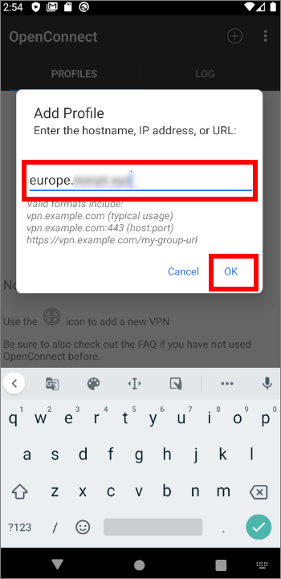
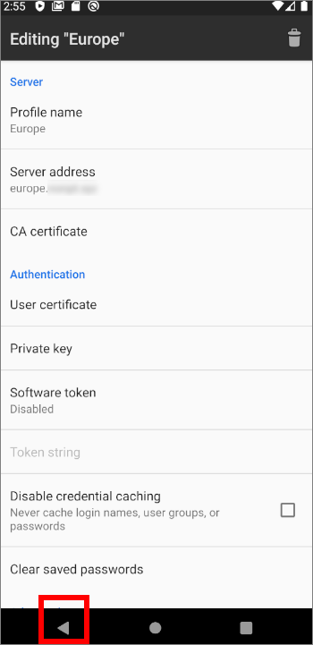
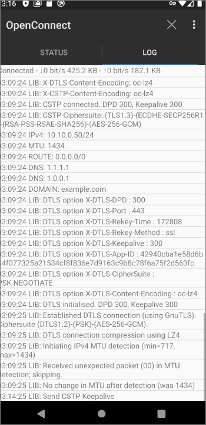

OpenConnect on Debian and Android
OpenConnect sometimes gets through in environments where other protocols fail. It is a Secure Sockets Layer (SSL) virtual private network (VPN). This means that it uses the same Transport Layer Security (TLS) as is used by ordinary websites that support HTTPS. The consequence is that OpenConnect can often pass by censors undetected. It has also (currently experimental) compatibility with clients using the AnyConnect SSL VPN protocol.
This tutorial will show you how to install OpenConnect SSL VPN on a Debian server and an Android client.
Debian is a long-established and highly respected Linux distribution. It is popular with server administrators. New releases are issued every few years, and at the time of writing the latest release is Debian 10.
Android is the most popular mobile operating system in the world, running on around five out of every six mobile devices.
1. Set Up Server
Before you begin, you’ll need to acquire a domain name
and a server.
This tutorial assumes you start with a newly created virtual private server
(VPS).
The domain name used in the examples is example.com
with a sample hostname of europe.example.com.
1.1. SSH as Root
Log in to your server using a tool such as PuTTY, XSHELL, or PowerShell (if you use Windows on your workstation), or the SSH command in a terminal emulator (if you use Linux or Mac on your workstation).
If your VPS provider sent you a root password by email, then log in as root and change the root password to something only you know:
passwd root
If you do not know the root password, then SSH in as a non-root user, and set the root password to something you do know:
sudo passwd root
Then switch to the root user:
su -
For the rest of this tutorial, we assume you are logged in as root.
1.2. Update Your Server
Get your entire system up to date by issuing these commands as root:
apt update
apt dist-upgrade
apt autoremove
1.3. Implement BBR Congestion Control
Bottleneck Bandwidth and Roundtrip propagation time (BBR) is a congestion control algorithm for Transmission Control Protocol (TCP). It aims to achieve higher bandwidths and lower latencies.
Edit your Linux system control parameters file,
/etc/sysctl.conf, to specify the BBR congestion control algorithm.
You can use any command-line editor for this. For example, if your favorite
editor is the vi editor:
vi /etc/sysctl.conf
Alternatively, if your favorite editor is the nano editor:
nano /etc/sysctl.conf
Add two lines at the end of the current file:
net.core.default_qdisc=fq
net.ipv4.tcp_congestion_control=bbr
Write the file to disk, and quit the editor. Activate this change by issuing the command:
sysctl -p
1.4. Install Firewall
Hackers repeatedly attempt to brute-force their way into servers that leave their SSH port open. Therefore we will protect our server with a firewall.
Install the nftables firewall package:
apt install nftables
Specify that you want to start nftables after every reboot,
and start it now:
systemctl enable nftables
systemctl start nftables
1.5. Configure Firewall
List the current nftables rules:
nft list ruleset
You should see a table for inet filter, plus a
chain within it for each of input,
forward, and output.
table inet filter {
chain input {
type filter hook input priority 0; policy accept;
}
chain forward {
type filter hook forward priority 0; policy accept;
}
chain output {
type filter hook output priority 0; policy accept;
}
}
If this table and its chains do not exist, then create them now:
nft add table inet filter
nft add chain inet filter input { type filter hook input priority 0 \; policy accept\; }
nft add chain inet filter forward { type filter hook forward priority 0 \; policy accept\; }
nft add chain inet filter output { type filter hook output priority 0 \; policy accept\; }
On the other hand, if these rules do already exist, then simply carry on as follows.
Add a rule to accept all related and established traffic:
nft add rule inet filter input ct state related,established counter accept
Add a rule to accept all loopback interface traffic:
nft add rule inet filter input iif lo counter accept
For the next rule, you need to know your workstation’s Internet Protocol (IP) address. If you do not know your IP address, you can find it out by opening a browser and visiting https://www.ipip.net or https://whatismyipaddress.com.
Let’s assume your workstation’s IP address is
11.22.33.44. If that is relatively fixed, whitelist your
IP address for access to port 22,
which is the port you use for SSH:
nft add rule inet filter input tcp dport 22 ip saddr 11.22.33.44/32 counter accept
Alternatively, you can open port 22 for a range
of IP addresses. For example, if your ISP allocates addresses in the range
11.22.0.0 through 11.22.255.255, you could open
port 22 for the entire range like this:
nft add rule inet filter input tcp dport 22 ip saddr 11.22.0.0/16 counter accept
Do not open port 22 for the entire world.
We will use port 80/tcp for Let’s Encrypt
and ports 443/tcp and 443/udp for OpenConnect,
so open them too:
nft add rule inet filter input tcp dport 80 counter accept
nft add rule inet filter input tcp dport 443 counter accept
nft add rule inet filter input udp dport 443 counter accept
Check that the rules now look as expected:
nft list ruleset
To persist these changes across reboots, save your rules to
/etc/nftables.conf:
nft list ruleset > /etc/nftables.conf
Now we are going to change the default policy to drop all other input.
Edit the nftables configuration file in your preferred
editor. For example, if your preferred editor is the vi
editor:
vi /etc/nftables.conf
Alternatively, if your preferred editor is the nano
editor:
nano /etc/nftables.conf
Change the policy from accept to drop:
chain input {
type filter hook input priority 0; policy drop;
Restart nftables with your new configuration:
systemctl restart nftables
Note: Some cloud providers require you also to open your server’s “Security Group.”
1.6. Obtain Let’s Encrypt SSL Certificate
The Let’s Encrypt project offers free SSL certificates. Before you apply for your SSL certificate, you need to check that your hostname DNS records have propagated, so that the hostname points to your server IP address:
apt install dnsutils
nslookup europe.example.com 1.1.1.1
If you receive an NXDOMAIN response, wait a while, then repeat
the nslookup command until it returns your server IP address.
Install the Let’s Encrypt client, Certbot:
apt install certbot
Obtain a Let’s Encrypt SSL certificate and key:
certbot certonly --standalone
Respond to the certbot prompts:
- Enter your email address
- Enter a for agree
- Enter y or n to share your email address
- Type in the hostname (
europe.example.comin our example) for which you require a certificate
You should see a success message with wording such as
Congratulations! Your certificate and chain have been saved.
Let’s Encrypt SSL certificates are valid for 90 days. Set everything up for automatic renewal every 90 days:
certbot renew --dry-run
1.7. Install OpenConnect
Install OpenConnect from the Debian repositories. Note that
we do not need the OpenConnect client (openconnect) or the related
Network Manager graphical user interface (GUI) for OpenConnect —
just the OpenConnect server package, ocserv:
apt install ocserv
The version of ocserv in the Debian repositories
is 0.12.2. This should suit most people. If you want a more recent version,
you will need to
build from source.
1.8. Create Passwords
OpenConnect comes with a utility, ocpasswd,
to create passwords for your users.
Let’s suppose you have three users named
Alice, Bob, and Carol. We will store their passwords in the file
/etc/ocserv/ocpasswd.
Issue the following commands in turn. As you issue each one, you will be prompted to enter and confirm a password for each new user.
ocpasswd -c /etc/ocserv/ocpasswd alice
ocpasswd -c /etc/ocserv/ocpasswd bob
ocpasswd -c /etc/ocserv/ocpasswd carol
The three usernames and their respective password hashes are stored in
/etc/ocserv/ocpasswd.
1.9. Configure OpenConnect
Now we come to the main coniguration of OpenConnect.
Edit the configuration file.
If your preferred editor is the vi editor:
vi /etc/ocserv/ocserv.conf
Alternatively, if your preferred editor is the nano editor:
nano /etc/ocserv/ocserv.conf
Comment out the line for pluggable authentication module (pam)
by inserting a hash sign (#)at the start of the line:
#auth = "pam[gid-min=1000]"
Specify that we will use the password file for authentication by inserting a line:
auth = "plain[passwd=/etc/ocserv/ocpasswd]"
Further down, give the actual location of the SSL certificate and key.
We continue to give examples for europe.example.com,
which you will have to change to match your actual hostname.
server-cert = /etc/letsencrypt/live/europe.example.com/fullchain.pem
server-key = /etc/letsencrypt/live/europe.example.com/privkey.pem
Comment out the CA certificate line:
#ca-cert = /etc/ssl/certs/ssl-cert-snakeoil.pem
Specify the private IP address range 10.10.0.0/24
for our VPN:
ipv4-network = 10.10.0.0
Optionally change the public nameservers we will use, and specify that all nameserver traffic should be tunneled through to the server:
tunnel-all-dns = true
#dns = 8.8.8.8
#dns = 8.8.4.4
dns = 1.1.1.1
dns = 1.0.0.1
Comment out all the route commands
by inserting a hash sign (#) at the start of these lines:
#route = 10.0.0.0/8
#route = 172.16.0.0/12
#route = 192.168.0.0/16
If you prefer a configuration file with all the blank lines and explanatory commented lines removed, it will look like this:
auth = "plain[passwd=/etc/ocserv/ocpasswd]" tcp-port = 443 udp-port = 443 run-as-user = nobody run-as-group = daemon socket-file = /run/ocserv.socket server-cert = /etc/letsencrypt/live/europe.example.com/fullchain.pem server-key = /etc/letsencrypt/live/europe.example.com/privkey.pem isolate-workers = true max-clients = 128 max-same-clients = 2 server-stats-reset-time = 604800 keepalive = 300 dpd = 60 mobile-dpd = 300 switch-to-tcp-timeout = 30 try-mtu-discovery = false cert-user-oid = 0.9.2342.19200300.100.1.1 compression = true no-compress-limit = 256 tls-priorities = "NORMAL:%SERVER_PRECEDENCE:%COMPAT:-RSA:-VERS-SSL3.0:-ARCFOUR-128" auth-timeout = 240 idle-timeout = 1200 mobile-idle-timeout = 1800 min-reauth-time = 3 max-ban-score = 50 ban-reset-time = 300 cookie-timeout = 300 deny-roaming = false rekey-time = 172800 rekey-method = ssl use-occtl = true pid-file = /run/ocserv.pid device = vpns predictable-ips = true default-domain = example.com ipv4-network = 10.10.0.0 ipv4-netmask = 255.255.255.0 tunnel-all-dns = true dns = 1.1.1.1 dns = 1.0.0.1 ping-leases = false cisco-client-compat = true dtls-legacy = true
Write the file to disk, and quit the editor.
1.10. Reconfigure Kernel
We will make one more change to the Linux kernel configuration
to enable packet forwarding. Again, we will do this by editing
/etc/sysctl.conf.
If your favorite editor is the vi editor:
vi /etc/sysctl.conf
Alternatively, if your favorite editor is the nano editor:
nano /etc/sysctl.conf
Uncomment this line by removing the hash sign (#)
at the start of the line:
net.ipv4.ip_forward=1
Write the file to disk, and quit the editor. Activate this change by issuing the command:
sysctl -p
1.11. Configure Masquerading
When a packet arrives at the server, we want to forward it to its destination as though it originated from the server and not the client. This is called masquerading.
Add a firewall table to perform this Network Address Translation (NAT):
nft add table nat
Add prerouting and postrouting chains:
nft add chain nat prerouting { type nat hook prerouting priority 0 \; }
nft add chain nat postrouting { type nat hook postrouting priority 100 \; }
Add a rule to perform outbound IP address masquerading
for any packet with a source address in the 10.10.0.0/24
range :
nft add rule nat postrouting ip saddr 10.10.0.0/24 oif eth0 masquerade
Save the revised firewall rules as they now stand:
nft list ruleset > /etc/nftables.conf
1.12. Restart OpenConnect
systemctl stop ocserv
systemctl start ocserv
1.13. Exit SSH Session
Your work on the server is done for now. Exit your SSH session by typing the command:
exit
2. Set Up Client
Now work on your Android phone or tablet.
2.1. Install OpenConnect
Download and install OpenConnect for Android from the Google Play Store or ApkPure.
2.2. Configure OpenConnect
Open the OpenConnect app. Click the plus sign to add a profile.
Insert the hostname or IP address for your server. Tap OK.
Give the profile a meaningful name. Tap OK.
The profile now has your intended name. Use the Android back button to return to the main screen.
The new profile is listed.
2.3. Connect
Tap the profile to connect.
Enter your username and tap OK.
On the next screen, enter your password and tap OK.

The connection is made. The screen now shows the STATUS and LOG tabs for the connection.
2.4. Test
End-to-end test your entire configuration (server and client) by opening a browser on your Android device and visiting https://ipchicken.com.
You should see your server IP address, not your client IP address.
2.5. Disconnect
Back in OpenConnect, tap the Disconnect button.
3. Troubleshoot Issues
You can find documentation for OpenConnect on Gitlab. The official site for OpenConnect is https://www.infradead.org/openconnect/.
If you have any problems, here are some steps you can take to troubleshoot.
1. Double-check that your client configuration is an exact match for the settings on your server.
2. On the client, look at the LOG tab for the connection.
3. On the Debian server, look for messages with these commands:
systemctl status ocserv
journalctl -u ocserv
4. If you still have an issue, consult the OpenConnect help page at https://www.infradead.org/openconnect/mail.html for further support.